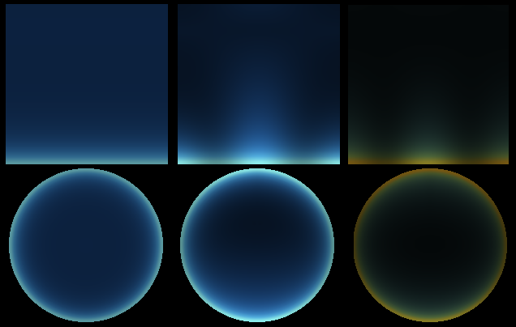
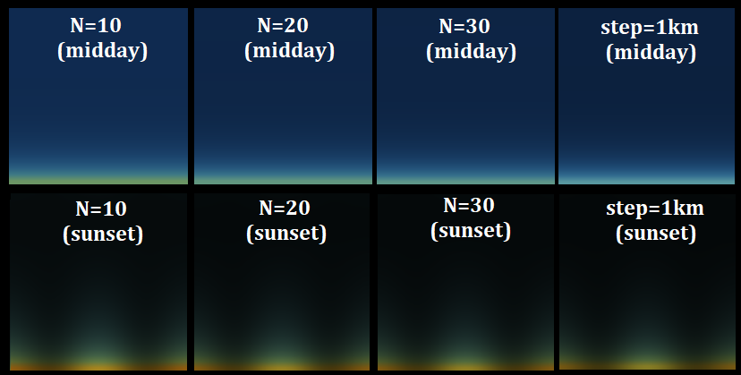
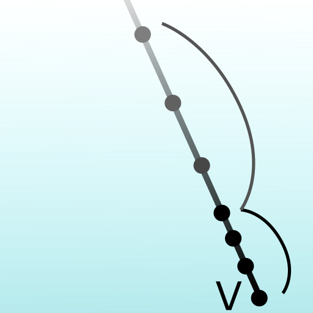
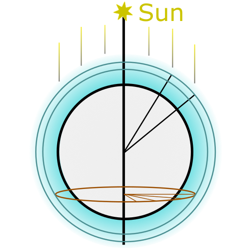
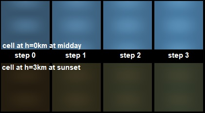
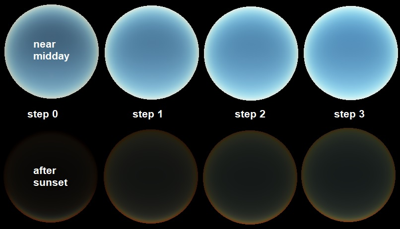
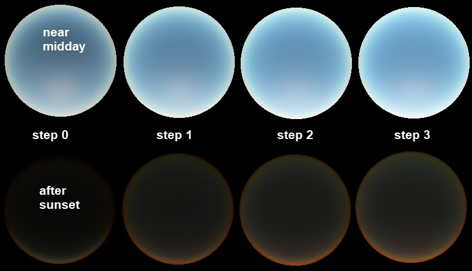
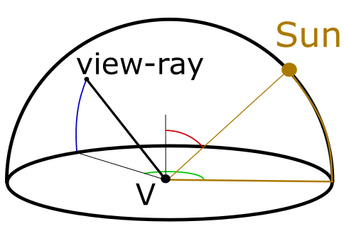

Real-time procedural sky rendering
Created on 2023, last updated on December 2023
This post demonstrates how a procedural sky can be rendered in real-time. I will describe some of the methods that I found relevant for my case, which is to render the sky being at low altitude and above the ocean. A naive implemention is firstly detailed, then the computation is gradually complexified to obtain a more convincing sky.
1. Atmospheric scattering

The sky color is due to the atmospheric scattering, that comes from the interaction of the particles in the atmosphere with the light. There are two main scattering types:
- the Rayleigh scattering that explains the blue color of the sky,
- the Mie scattering that makes the clouds visible.
The scattering effect is locally defined by a phase function, that expresses the ratio between the incoming and the outcoming light at a certain angle. It is assumed that the Rayleigh and Mie scatterings do not interfere, their effect is therefore additive. With \( h \) being the altitude and \( \theta \) the angle between the incoming and outcoming light direction, the scattering is computed as following: $$ \sigma(h,\theta) = \beta_R(h) \; \phi_R(\theta) + \beta_M(h) \; \phi_M(\theta) $$ where
- \( \beta_R(h) = \beta_{R0} \{ 0.11, 0.32, 0.68 \}_{rgb} \; e^{-h/h_{R0}} \) is the Rayleigh scattering strength,
- \( \beta_M(h) = \beta_{M0} \{ 0.5, 0.5, 0.5 \}_{rgb} \; e^{-h/h_{M0}} \) is the Mie scattering strength,
- \( \phi_R(\theta) = \frac{3}{16 \pi} \left( 1+\cos(\theta)^2 \right) \) is the Rayleigh phase function,
- \( \phi_M(\theta) = \frac{3}{8 \pi} \left( \frac{1 - g^2}{2 + g^2} \right) \frac{1+\cos(\theta)^2}{ \left( 1 + g^2 - 2 g \cos(\theta) \right) ^{ \frac{3}{2} }} \) is the Mie phase function.
It is admitted that \( h_{R0} = 8 \) km and \( h_{M0} = 1.2 \). Both \( \beta_{R0} \) and \( \beta_{M0} \) are coefficients that control the breadth of the scattering. The scattering induces a light extinction, which is the part of the light being scattered away when following a straight path: $$ \alpha(path) = \exp ( - \alpha_c \; d_{optic} ) $$ where \( \alpha_c \) is the extinction coefficient and \( d_{optic} \) is the optical distance: $$ d_{optic} = \beta_{R0} \int_{path} { e^{-h/h_{R0}} dl } + \beta_{M0} \int_{path} { e^{-h/h_{M0}} dl } $$
2. Single scattering implementation

The single scattering is often detailed and implemented in online resources. It is quick to implement and it allows real-time rendering with a few tricks. The single scattering method consists in the discretization of the view ray in multiple points, and to sum the light being scattered at all of those points: $$ \overline{L} = L_{sun} \int_{P \in ray} { \alpha(V \rightarrow P) \; \alpha(P \rightarrow Sun) \; \sigma(P) \; dl } $$ where \( \alpha(path) \) is the light extinction along a straight path and \( \sigma(P) \) the scattering at the point P.
Extinction pre-computation:
The extinction is an integral that is costly to evaluate by summation.
To prevent this, many resources are using a pre-computed lookup texture.
Since the altitude of the viewer and the characteristic altitudes of the scattering effect are too negligeable compared
to the scale of the Earth's radius, I decided to use a math approximation for the extinction towards the sun.
I thus express the optical-distance to the sun with:
$$ d_{optic,sun} = \int_{P}^{Sun} { e^{-h/h0} dl }
\simeq \int_{x=0}^{+\infty} { e^{ - ( a x^2 + b x + c ) } dx }
= \frac{\sqrt{\pi}}{2\sqrt{a}} e^{-c} e^{\frac{b^2}{4a}} \left( 1 - \mathrm{erf} \left( \frac{b}{2\sqrt{a}} \right) \right) $$
where \( a = \frac{1-cos^2 \theta}{2 R h0} \) , \( b = \frac{cos \theta}{h0} \) , \( c = \frac{h_{start}}{h0} \) .
This approximation is fairly good while the ray does not travel towards the ground (while \(b\) is positive).
I also use asymptotic approximations of the erf function to have a friendlier expression to compute.
When \(b\) is negative, I consider that the ray starts at its lowest altitude point.
Finally, the optical distance to the sun is expressed with:
$$ d_{optic,sun} =
\begin{cases}
e^{-c} \frac{\sqrt{2 \pi R h0}}{2} e^{\frac{R \cos^2{\theta}}{h0}} \; \; \; \mathrm{ when } \; b < 0
\\
e^{-c} \frac{1}{b} \left(1 - \frac{2a}{b^2} + \frac{12a^2}{b^4} \right) \; \; \; \mathrm{ when } \; b > 7 \sqrt{a}
\\
e^{-c} \frac{\sqrt{\pi}}{2 \sqrt{a}} \left( 0.3480242 p - 0.0958798 p^2 + 0.7478556 p^3 \right) \; \; \; \mathrm{ with } \; \; \; p = \frac{2 \sqrt{a}}{2 \sqrt{a} + 0.47047 b}
\end{cases}
$$
Results:
This implementation of the sky scattering gives a plausible result with low effort, however the resulting sky isn't realistic enough. In short terms, at midday, the sky looks too dark compared with the horizon light's intensity. To increase the extinction coefficient may appear as a solution, but the sky will appear yellowed even at midday. The overall light intensity behaves weirdly, with a maximal intensity not at midday. The light intensity is lower on the sides, producing spurious pattern. This comes from the Rayleigh phase function. With Mie scattering, the horizon appears dark (not shown here). This is because the poor sampling of the Mie scattering effect, where the light is highly absorbed at low altitude. On the picture below, the sky is rendered with Rayleigh scattering only, from midday to sunset.

The shader code:
Single scattering (Click to expand.)
uniform vec3 sunDirectionIncoming; uniform float factorMie; uniform float gMie; const float rE = 6.3e3f; // radius of Earth (km) const vec2 h0 = vec2(8., 1.2); // ch. altitude (Rayleigh, Mie) (km) const float extinctionCoef = 0.063; // extinction coefficient const float hMax = 50.f; // max altitude for computations const int rayIntg_nsteps = 30; // nbr of integration points const float rayIntg_norm = 1.f / float(rayIntg_nsteps); const vec3 scatteringCoefs_R = vec3(0.11f, 0.32f, 0.68f); const vec3 scatteringCoefs_M = vec3(0.50f, 0.50f, 0.50f); vec3 localScatteringLight(float h, float c) { vec3 fR = exp(-h / h0.x) * scatteringCoefs_R; vec3 fM = exp(-h / h0.y) * scatteringCoefs_M * factorMie; float cc = c * c; float gg = gMie * gMie; float den = 1.f + gg - 2.f * c * gMie; float phaseR = 0.05968310365946075f * (1.f + cc); float phaseM = 0.1193662073189215f * (1.f - gg) * (1.f + cc) / (sqrt(den * den * den) * (2.f + gg)); return fR * phaseR + fM * phaseM; } vec2 opticalDistanceGroundToSun(float csz) { csz = max(0.f, csz); vec2 a = 0.5f * (1.f - csz * csz) / h0 / rE; vec2 b = csz / h0; vec2 sqrta = sqrt(a); vec2 ainvbb = a / (b * b); vec2 p = (2.f * sqrta) / (2.f * sqrta + 0.47047f * b); vec2 optInf = (1.f - 2.f*ainvbb + 12.f*ainvbb*ainvbb) / b; vec2 optMid = 0.5f * sqrt(3.141592f / a) * p * (0.3480242f - 0.0958798f * p + 0.7478556f * p * p); vec2 ret; ret.x = (b.x > 7.f * sqrta.x) ? optInf.x : optMid.x; ret.y = (b.y > 7.f * sqrta.y) ? optInf.y : optMid.y; return ret; } vec3 skyColor(vec3 rayView) { vec3 ray = vec3(rayView.xy, abs(rayView.z)); float cvz = max(rayView.z, 0.f); // cos view zenith float hMaxOverR = hMax / rE; float rayLength = rE * (sqrt(cvz*cvz + 2.f * hMaxOverR + hMaxOverR*hMaxOverR) - cvz); float step = rayLength * rayIntg_norm; float cosRS = dot(-sunDirectionIncoming, ray); // cos of angle between the ray and the sunlight vec3 lightAcc = vec3(0.f); vec2 optD_VP = vec2(0.f, 0.f); for (int iStep = 0; iStep < rayIntg_nsteps; ++iStep) { float x = (0.5f + float(iStep)) * step; vec3 pt = vec3(0.f, 0.f, rE) + x * ray; float rP = length(pt); float hP = rP - rE; // elevation float csz = clamp(dot(pt, -sunDirectionIncoming) / rP, -1.f, 1.f); vec2 optD_GroundSun = opticalDistanceGroundToSun(csz); vec2 rhoP = exp(-hP/h0); float cszNeg = min(0.f, csz); vec2 optD_PS = optD_GroundSun * exp(-(hP - cszNeg*cszNeg*rE)/h0); // direct scattering { vec3 globalOptD = (optD_VP.x + optD_PS.x) * scatteringCoefs_R + (optD_VP.y + optD_PS.y) * scatteringCoefs_M * factorMie; vec3 localScatteringPS = localScatteringLight(hP, cosRS); lightAcc += stepx * exp(-extinctionCoef * globalOptD) * localScatteringPS; } optD_VP += step * rhoP; } { float sunDisk = min(exp(6.e4f * (cosRS-0.999962f)), 1.f); // the sun-disk is 0.25 degree radius lightAcc += sunDisk * 5.f * vec3(1.f, 1.f, 1.f); } return lightAcc; }
Impact of the number of discretized points:
I did some tests with various count of discretization points (rayIntg_nsteps).
Having less scattering points renders the sky as if the extinction coefficient was higher.
Indeed, it leads to a brighter and more uniform sky, but more yellowish near the horizon.
As expected, the number of discretization points strongly impacts the performances.

Two steps discretization with both Rayleigh and Mie scattering:

Because the Mie scattering has an 8-times lower characteristic altitude than the Rayleigh scattering characteristic altitude, the distribution of the discretization points significantly affects the output. To have a good sampling of the scattering, the distance between two points should be shorter than the characteristic altitude's one. Consequently, with the Mie scattering this distance should at most be about 1 km. As for the Rayleigh scattering, this distance should measure up to 8km, but given its magnitude in practice it can be higher while keeping a relatively high resolution. While keeping the reasonably low number of discretization points, I choose to split the view-ray in 2 parts: a first part with a short distance between 2 discretization points (so the Mie scattering will be accurately evaluated), and a second part with a long distance (so the Rayleigh scattering will be accurately evaluated).
3. Multiple scattering method
To improve the results, the indirect scattering needs to be taken into account. Badfully, the methods only based on ray-tracing would be too computationally intense to stay in real time. Therefore, an hybrid method will be described. A part of the computations will be issued asynchronuously on the CPU, while the GPU shader takes the rest of the computations, being real time. Moreover, this allows to use the atmosphere lighting in other shaders, for example in the lighting equations for the objects in the scene.
3.Preambule: Multiple scattering with a full ray-tracing method
While keeping all the computations on the GPU, I found some ways to improve the ray-tracing method. However, the method is too expensive, and the obatined results are still not enough convincing. This section can be skip, as it does not contribute to the final method.
I start by considering a local small sphere around the point P. The goal is to determine the scattering induced by this local sphere. At any points of the sphere, the incoming light is assumed to be uniform. There are 2 scattering events, one at the center of the sphere and one at the surface of the sphere. The total scattered light is: $$ \sigma^{(2)} (h,\theta) = \sigma(h,\theta) + \int_{y=0}^{2 \pi} \int_{x=0}^{\pi} \sigma(h,x) \; \sigma(h,z) \sin(x) dx dy $$ where \( z \) is the angle such that $$ \cos(z) = \cos(x) \cos(\theta) + \sin(x) \sin(\theta) \sin(y) $$ The obatined integral can be split into pieces that are pre-computable with analytic approximations (available in the shader code below).
I continue by emmiting a secondary ray from the first scattering event location along the primary ray. It results to accumulate light from 2 scattering events, which is: $$ \overline{L}^{(2)} = L_{sun} \int_{P \in ray} { \alpha(V \rightarrow P) \int_{ray2 \in sphere} { \sigma(P) \int_{Q \in ray2} { \alpha(P \rightarrow Q) \sigma(Q) \alpha(Q \rightarrow Sun) \; dl } \; dS } \; dl } $$ It appears that the secondary rays should cover all directions for each event location (P). For the secondary rays, I only select the two vertical directions (down and up). Even if it is a rough approximation, to have these two rays will allow to catch interesting visual effects. It entails that a part of the scattered light source is constant either from the ground direction or from the up direction. This expression can be split into pieces that are pre-computable with analytic approximations (available in the shader code below).
And finally, the shader code:
(Click to expand.)
// Constants - see the shader above vec2 opticalDistanceGroundToSun(float csz); // See the shader above vec3 localScatteringLight(float h, float c, float factorMie, float g) { vec3 fR = exp(-h / h0.x) * scatteringCoefs_R; vec3 fM = exp(-h / h0.y) * scatteringCoefs_M * factorMie; float cc = c * c; float gg = g * g; float den = 1.f / sqrt(1.f + gg - 2.f * c * g); float phaseR = 0.05968310365946075f * (1.f + cc); float phaseM = 0.1193662073189215f * (1.f - gg) * (1.f + cc) * den * den * den / (2.f + gg); float phaseRR = 0.07758803475729897f + 0.005968310365946076f /* 3 / (160 pi) */ * cc; float phaseRM = (0.077713f + g * -0.00207583f + gg * -0.0166216f) + (0.00560625f + g * 0.00649282f + gg * 0.0494774f) * cc; float ginvomg = g / (1.f - g); float phaseMM = ((0.0775971f + -0.0440173f * gg * ginvomg) + (0.00597702f + (0.00403158f + 0.0559416f * gg) * ginvomg) * c * c + (0.375561f * g + -0.46816f * g / (1.f + g)) * c) * den; return fR * phaseR + fM * phaseM + fR * fR * phaseRR + fR * fM * phaseRM + fM * fM * phaseMM; } vec3 twoEventScattering(float hP, float hQ, float ctvs, float ctv, float cts, float factorMie, float g, bool isUp) { vec3 fR_P = exp(-hP / h0.x) * scatteringCoefs_R; vec3 fM_P = exp(-hP / h0.y) * scatteringCoefs_M * factorMie; vec3 fR_Q = exp(-hQ / h0.x) * scatteringCoefs_R; vec3 fM_Q = exp(-hQ / h0.y) * scatteringCoefs_M * factorMie; float ctvs2 = ctvs * ctvs; float gg = g * g; float goomg = g / (1.f - g); float sgn = isUp ? 1.f : -1.f; float mt = (ctv * sgn > 0.f) && (cts * sgn > 0.f) ? ctv * ctv * cts * cts : 0.f; float phaseRR_halfIntegral = 0.038794f + 0.00298415f * ctvs2; float phaseRM_halfIntegral = (0.038794f - 0.00950875f * gg) + (0.00298621f + 0.028495f * gg) * ctvs2 + (0.0770418f * g - 0.0198734f * gg) * cts * sgn; float phaseMR_halfIntegral = (0.038794f - 0.00950875f * gg) + (0.00298621f + 0.028495f * gg) * ctvs2 + (0.0770418f * g - 0.0198734f * gg) * ctv * sgn; float phaseMM_halfIntegral = (0.038794f - 0.0166585f * goomg) + (0.00298612f + 0.042992f * g * goomg) * ctvs2 + (0.331325 * g / (1.f-gg)) * mt; return fR_P * fR_Q * phaseRR_halfIntegral + fR_P * fM_Q * phaseRM_halfIntegral + fM_P * fR_Q * phaseMR_halfIntegral + fM_P * fM_Q * phaseMM_halfIntegral; } vec3 skyColorScattering(vec3 rayView) { int rayIntg_nsteps = _nstepMain; float rayIntg_norm = 1.f / float(rayIntg_nsteps); vec3 ray = vec3(rayView.xy, abs(rayView.z)); float cosViewZenith = max(rayView.z, 0.f); float rayLength = rE * (sqrt(cosViewZenith*cosViewZenith + 2.f * hMaxOverR + hMaxOverR*hMaxOverR) - cosViewZenith); float stepxA = 5.f * 0.5f * rayIntg_norm; float stepxB = (rayLength - 5.f) * 0.5f * rayIntg_norm; float cosRS = dot(-sunDirectionIncoming, ray); // cos of angle between the ray and the sunlight vec3 lightAcc = vec3(0.f); vec2 optD_VP = vec2(0.f, 0.f); for (int iStep = 0, stop = 2 * rayIntg_nsteps; iStep < stop; ++iStep) { float stepx = (iStep < rayIntg_nsteps) ? stepxA : stepxB; float x = (iStep < rayIntg_nsteps) ? (0.5f + float(iStep)) * stepxA : 5.f + (0.5f + float(iStep - rayIntg_nsteps)) * stepxB; vec3 pt = vec3(0.f, 0.f, rE) + x * ray; float rP = length(pt); float hP = rP - rE; // elevation vec3 rayUp = pt / rP; float csz = clamp(dot(rayUp, -sunDirectionIncoming), -1.f, 1.f); vec2 optD_GroundSun = opticalDistanceGroundToSun(csz); vec2 rhoP = exp(-hP/h0); optD_VP += 0.3f * stepx * rhoP; float cszNeg = min(0.f, csz); float hOffset = cszNeg * cszNeg * rE; vec2 optD_PS = optD_GroundSun * exp(-(hP - hOffset)/h0); // direct scattering if (true) { vec3 globalOptD = (optD_VP.x + optD_PS.x) * scatteringCoefs_R + factorMie * (optD_VP.y + optD_PS.y) * scatteringCoefs_M; vec3 scatteringPS = localScatteringLight(hP, cosRS, factorMie, gMie); lightAcc += stepx * exp(-extinctionCoef * globalOptD) * scatteringPS; } // indirect scattering (secondary ray up & down) if (_nstepsub != 0) { float stepy = hMax / float(_nstepsub); float cosPQ = dot(ray, rayUp); float cosQS = dot(rayUp, -sunDirectionIncoming); float phaseRR_halfIntegral = 0.038794f + 0.00298415f * (cosPQ*cosPQ*cosQS*cosQS + (1.f-cosPQ*cosPQ)*(1.f-cosQS*cosQS)); vec3 accum = vec3(0.f, 0.f, 0.f); for (int jStep = 0; jStep < _nstepsub; ++jStep) { float hQ = (0.5f + float(jStep)) * stepy; vec2 rhoQ = exp(-hQ/h0); vec2 optD_PQ = abs(rhoQ - rhoP) * h0; vec2 optD_QS = optD_GroundSun * exp(-(hQ - hOffset)/h0); vec3 globalOptD = (optD_VP.x + optD_PQ.x + optD_QS.x) * scatteringCoefs_R + factorMie * (optD_VP.y + optD_PQ.y + optD_QS.y) * scatteringCoefs_M; vec3 scatteringPQS = twoEventScattering(hP, hQ, cosRS, cosPQ, cosQS, factorMie, gMie, (hQ > hP)); accum += exp(-extinctionCoef * globalOptD) * scatteringPQS; } lightAcc += stepx * stepy * accum; } optD_VP += 0.7f * stepx * rhoP; } { vec3 tr = exp(-extinctionCoef * (optD_VP.x * scatteringCoefs_R + factorMie * optD_VP.y * scatteringCoefs_M)); float sunDisk = min(exp(6.e4f * (cosRS-0.999962f)), 1.f); // Note: the sun-disk is 0.25 degree radius lightAcc += sunDisk * tr * vec3(1.f, 1.f, 1.f); } return lightAcc; }
3.1 Discrete atmosphere model (CPU)
The discrete atmosphere model consists in partitionning the atmosphere into pieces and each piece would in turn receive and emit light.
This way, the global scattered light is recursively refined, the indirect scattering being natively taken into account.
Note that the related computations are heavy, and run asynchronously.
The atmosphere illumination only depends on the atmosphere properties, which are
the Mie scattering factor (factorMie) and
the Mie scattering forward-direction (gMie).
Therefore, the result of the computations would hopefully stay valid for some times.

Each cell is defined by an altitude range and an angular range. Because the system composed by the atmosphere and the sun has a radial symmetry, a single cell represents a whole ring defined from a certain altitude and sun elevation. Each cell will emit scattered light. The emitted light is defined by: $$ L_{emit}(\vec{r}) = c_0 \phi_R(\theta_{r,sun}) + c_1 \phi_M(\theta_{r,sun}, g) + c_2 \vec{r}_r |\vec{r}_r| + c_3 \vec{r}_t |\vec{r}_t| + c_4 \vec{r}_s^2 $$ where
- \( \phi_R \) and \( \phi_M \) are the Rayleigh and Mie phase functions,
- \( \vec{r}_r \) is the radial component of the output direction vector (vertical up),
- \( \vec{r}_t \) is its tangential component (horizontal opposite to the sun),
- \( \vec{r}_s \) is its side component,
- \( c_0 \), \( c_1 \), ... are coefficients.
Results:
Even if this chosen expression of the emitted light will discard details, this form reduces color artifacts. Taking both Rayliegh and Mie phase functions in the expression allows to natively take into account of the direct scattering from the sun, which is dominant on the first iterations. This form also has a small number of coefficients. Since the atmosphere model is computed recursively, we can evaluate the impact of the number of recursions (or steps).

3.2 Sky-dome illumination (CPU)
Even if the discretized atmosphere lighting could be uploaded and used by the GPU shader, we can continue to move computations down to the CPU (asynchronuously). In fact, the sky-dome illumination is fast to compute from sampling the atmosphere lighting. The downside is that the sky-dome illumination depends on an additionnal parameter: the sun elevation.

and with Mie scattering:

3.3 Sky-dome illumination regression (CPU)
I went a step further by fitting the sky-dome illumination in an arbitrary model, with only few coefficients. Finally, I ended with few floats to send to the GPU shader. The GPU shader now needs to reconstruct the sky-dome illumination, with help of few arithmetic functions. I used this following model: $$ Color = k_0 + k_1 e^{-2 sin(p)} + k_2 e^{-10 sin(p)} + e^{-5 sin(p)} \left( k_3 cos(y) cos(p) + k_4 cos(y)^2 cos(p)^2 \right) + k_5 e^{5 \frac{s - 1}{1 - g}} $$ where

- \( p \) is the pitch of the view ray (in blue),
- \( y \) is the yaw of the view ray (in green),
- \( s \) is the cosinus between the view ray and the sun,
- and the \( k_i \) are coefficients.
Note that those coefficients can be tabulated if the final application wants to avoid the asynchrous computations. For example, I decided to tabulate the coefficients (6 * 16 * 6 float3 values) when targetting mobile devices.
Work in progress regarding the dome regressions ....
3.4 Sky shader (GPU)
This model drastically reduces the cost of the rendering.
The obtained results are convincing too.
The shader code folds into few lines of code:
uniform vec3 skyCoefs[5];
vec3 skyColor(vec3 ray)
{
float sP = abs(ray.z);
float cYcP = dot(-sunDirectionIncoming.xy, ray.xy);
float cS = dot(-sunDirectionIncoming, ray);
float vpA = exp( -2.f*sP);
float vpB = exp(-10.f*sP);
float vpC = exp(- 5.f*sP);
vec3 color = skyCoefs[0] +
skyCoefs[1] * vpA +
skyCoefs[2] * vpB +
vpC * (skyCoefs[3] * cYcP + skyCoefs[4] * cYcP*cYcP);
float sunDisk = min(exp(6.e4f * (cS-0.999962f)), 1.f); // the sun-disk is 0.25 degree radius
color += sunDisk * skyCoefTr;
return max(vec3(0.f, 0.f, 0.f), color);
}